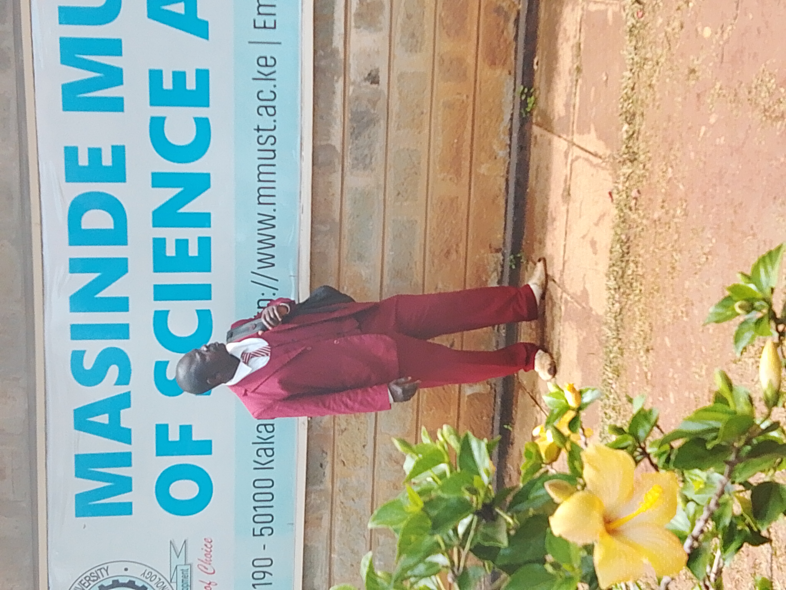
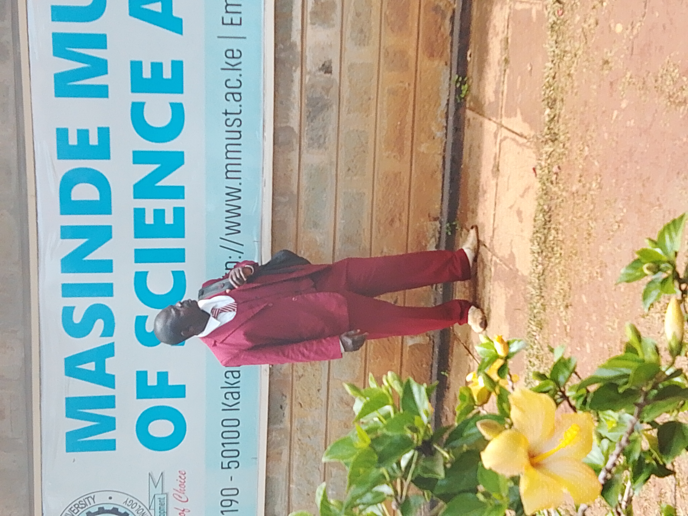
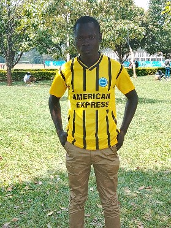
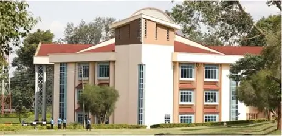
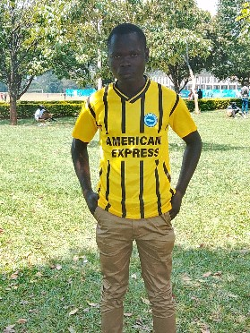
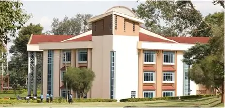
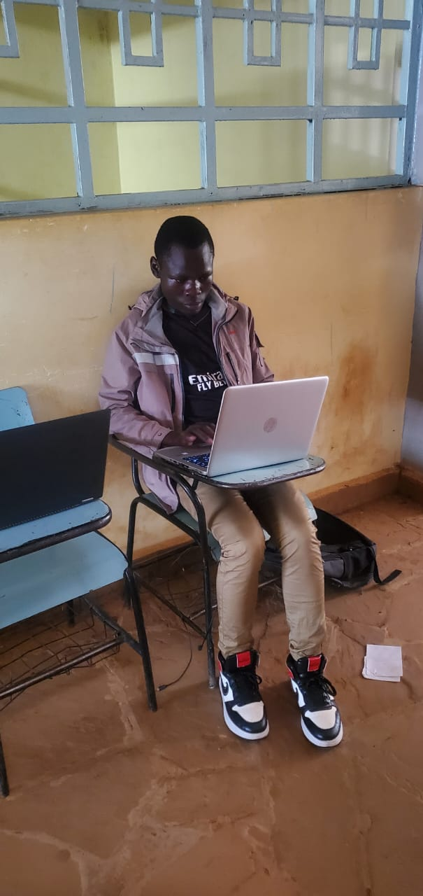
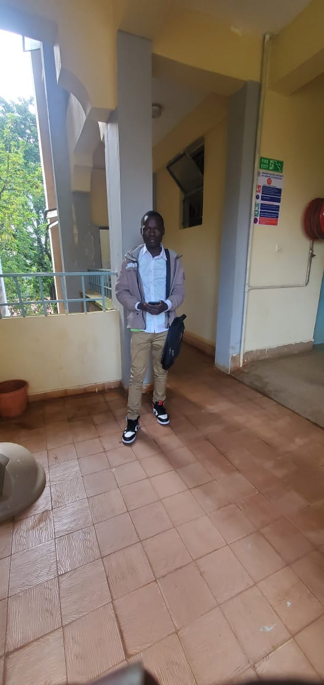
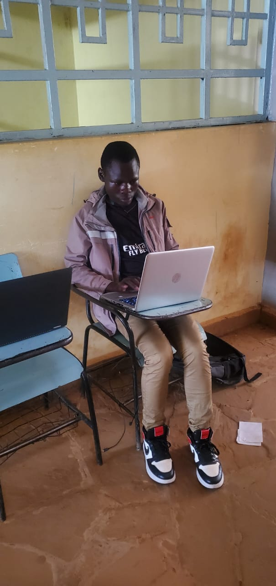
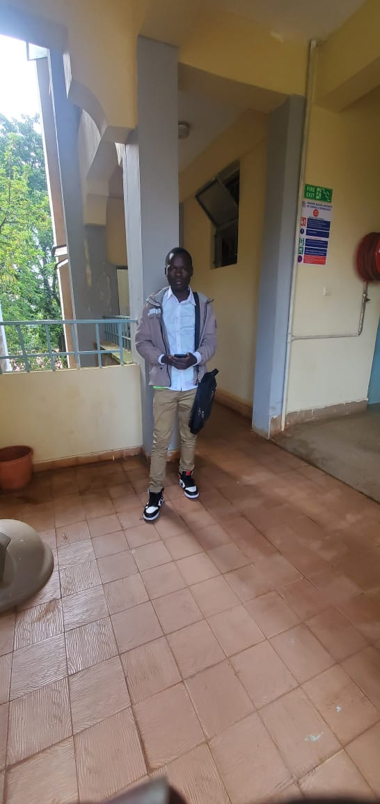

VULIMO EMMANUEL MULOLI
WEBSITE DEVELOPER.personal information
This my personal information. Vulimo Emmanuel was born onthe year 2005 april 8 at Nairobi.He has all his parent alive,his dad is pastor Samwel Bulinda and his Mum is Ms Violet Nanjala.I have three sibblings and am blessed to be the firstborn in our beloved family.John is the second born,then Caled and Barak consecutively. God willingly we were not blessed with a sister.I am a luhya from Kakamega County specifically Isukha .this is the pictures of my family.


 



I am a christian saved by christ.Meaning am born again.If there is a choise that i have ever made that have greatly benefited me and make me be the way i am today is accepting Jesus to be the personal saviour of my life.i have seen him revealing himself and doing great things that cannot be done by human beings
Educational background
I began my educational journey at Nairobi county i studied there nursery school then proceed to primary school at Nyange DEB primary school where i studied an eight year course. i sat for my KCPE exam inthe year 2021.but we hard to do it 2020.but due to corona virus we were forced to proceed to the following year. I thank God i was able to pass with 329marks.i proceeded to Mbakalo secondary school for a four year course I though i didnt wanted to join there but i was very ambisious that i can still achieve my goals through that school I had an ambition of being a doctor or a software engineer.So i decided to partake Physics and computer. I thank almighty God i was able to pass my national examination with a B+ i was able to be at position two in our school.From there i proceeded to Masinde Muliro University.this is where am currently studing .
 




 


